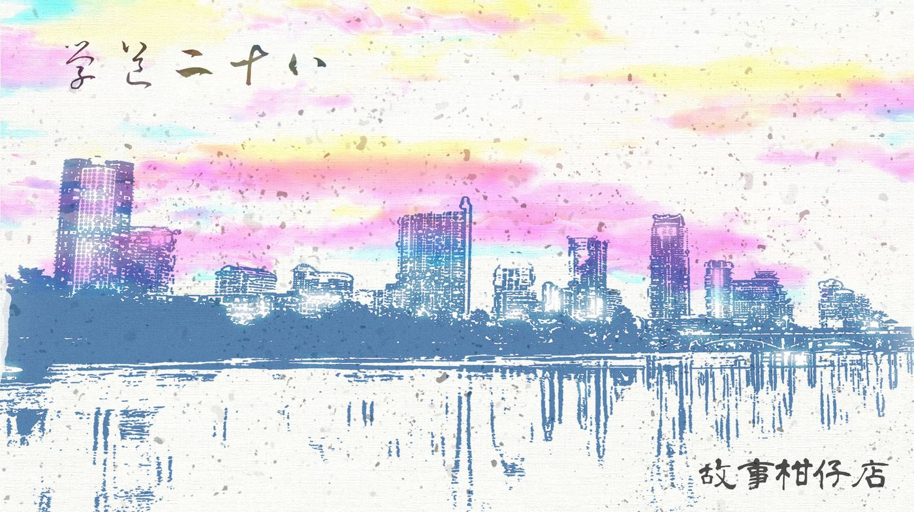

玄墨行者．學道（二十八）：下山

廂房裡，玉衡及虹月默默無語，背對背各自收拾東西。
玉衡面牆，虹月面門，手裡忙活，心裡千千結。
「師父……」
「下了山可不比山上，要好好照顧自己。」
玉衡打斷了虹月的話，她太知道徒兒要問什麼，乾脆搶先不讓她問。
虹月心性聰穎，恐怕已經猜到了：蒙叟的指派，是玉衡央來的。
那晚玉衡輾轉一夜，想著如何讓虹月下山而不遭師兄弟起疑，唯一辦法，便是讓蒙叟說話。
可蒙叟會答應嗎？玉衡不確定。蒙叟之於她，就是個瘋瘋癲癲的老人，要誰下山就誰下山，誰收妖就誰收妖。唯一特別的是，他似乎與天璣特別聊得來，過去天璣進了廂房，沒有一時半刻不會出來。
也許蒙叟是個明理人。
別無他法，天才矇矇亮，玉衡便悄悄入了內堂，叩門進廂房時，蒙叟一腳曲起身軀斜臥，彷彿早已做好準備。
「我說喲，妳是捨不得徒弟吃同樣的苦，還是要她去圓滿妳的遺憾？」
都還沒說明來意呢，蒙叟突如其來一句話，卻刺得玉衡發痛。
她環視四面石壁的廂房，還有那座巨大的預天儀，說沒有恨是騙人的。
她曾想過，若不是在這裡，若不是身負收妖使命，也許跟天璣有不一樣的結局。但，與天璣最快樂的記憶，也都在這裡了。
不能離開，也離不開了。
於是那天，她不替拾兒說話，就是為了讓他下山。或許在那一刻，她已經決定，要助虹月也離開這裡，受傷也好，孤獨也好，總之別將一生葬在孤峰。
只是她也說不清，究竟是為了虹月，還是為了自己。
「看來妳想清楚了。稍晚我會傳虹月，妳回去吧。」蒙叟又自顧自下了決定。
事情出乎意料的順利，連天璇也沒多說什麼，恐怕是沒人敢質疑蒙叟吧。
虹月整理了一小包細軟，玉衡看了不免心疼，這樣花樣年華的女孩，也沒幾件好看衣裳。
「收著，妳六師叔、七師叔送的。」
虹月接過，是一部智慧型手機，裏頭已經輸入了玄墨一門的聯絡人，當然也包含了拾兒。多虧開陽手腳快，趁著拾兒下山前，問了他的LINE ID。
玉衡又塞了一小捲鈔票到虹月口袋裡，「下山去買喜歡的衣服，吃點好吃的。」
她雙手捧著虹月的臉龐，眼眶含淚。
這樣一個聰穎貼心的女孩，容貌清麗卻玩笑似的長了塊大胎記，讓玉衡特別心疼她，隔著層肚皮又怎麼著？十多年來，她難道不是真真切切將虹月當作親出的嗎？
虹月眼淚先滾了出來，搖搖頭，搖亂烏黑髮絲，口齒不清：「我不想走了，師父。」
「妳能走，也該走。以前沒來得及有的，往後就能有了。」語焉不詳，虹月聽得似懂非懂。
此行既是蹲點當臥底，理當更加小心，蒙叟特意為虹月揀了個月明星稀的三更時分，出孤峰。
其他人都睡了，只有玉衡、開陽、瑤光聚在外廳送虹月。
「有任何問題就找我們，反正我們常在山下，別客氣。」開陽交代。
虹月乖巧點頭，背起行囊，轉身要走時，好像看見大曲偷偷從房內探頭出來目送她。
月光沖得她一身銀波。難為她這般潔淨身軀，竟也要往俗世裡滾上一回了。
－－－－－
#新連載依舊兩天一篇每晚準時六點半喔
#請人客多多指教
#記得去各大書店買我們的書故事柑仔店哩